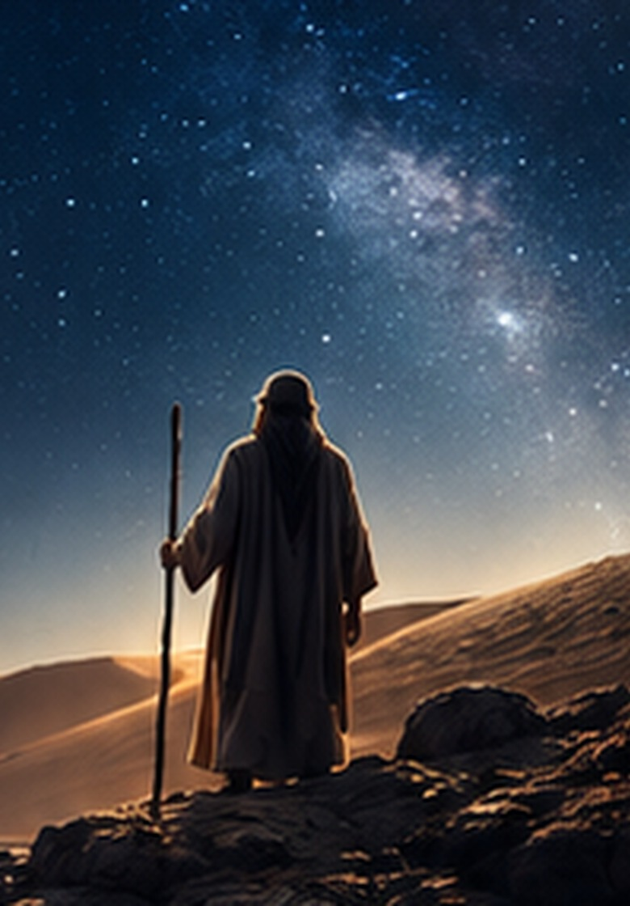

Promise, People
& the Beginning
of Israel
Abraham is where the story narrows to one family without narrowing God’s purpose for the world.
First, get the story in your head.
Genesis 1–11 follows humanity as a whole: creation, rebellion, the Flood, and Babel. At Babel, people gather to make a name for themselves. God scatters them. Then Genesis 12 does something striking: the camera moves from the nations to one man.
That man is Abram. God calls him to leave his country and promises to make him into a great nation, make his name great, and bless all the families of the earth through him. The story has narrowed, but the horizon has not.
Humanity gathered at Babel.
One people. One place. One project. “Let us make a name for ourselves.”
God gives Abraham something to trust before Abraham can see it.
Genesis 12 introduces the promise. Genesis 15 brings Abraham’s childlessness into the open and places him beneath the stars. Genesis 17 expands the covenant language and names Isaac as the promised son through Sarah.
Land.
Seed.
Blessing.
Don’t memorize three boxes. Watch each part behave.
Abraham becomes a family. The family becomes Israel.
Isaac is born as promised. Isaac’s son Jacob receives the same promise and is later renamed Israel. Jacob’s twelve sons become the ancestral foundation of Israel’s tribes. One of them is Judah—a name we will need later when the royal line moves toward David.
Joseph then explains why this family ends Genesis in Egypt. His brothers sell him there, but his position eventually becomes the means through which the family survives famine. Genesis closes with Joseph in Egypt looking forward to God keeping His promise.
After Babel, God calls a man named…
Put Abraham’s family in order.
Now Exodus
has an address.
Abraham → Isaac → Jacob / Israel → Twelve Sons → Joseph → Egypt
Watch the Bible connect itself.
Can you say it
without the workbook?
I know where Israel comes from.
Exodus now begins with context, not confusion.
Study the way a Bible reader actually studies.
Look what
you built.
The story in your head is getting bigger—and clearer.